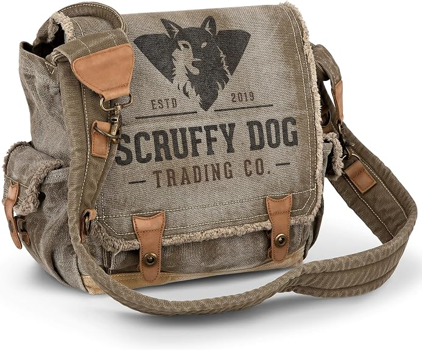

A heavy-duty, stone-washed canvas messenger bag with real leather tabs, vintage metal fittings, and signature frayed edges — fully lined and built to age well with daily use.
Our take: this is the pick for people who want a bag that looks better the more it's worn in. Seven pockets keep everything organized, it comfortably fits a 15.6" laptop in its own protective sleeve, and the wide cushioned strap (46–54") makes it genuinely comfortable for long carry days.
As an Amazon Associate, The Carry Club earns from qualifying purchases.